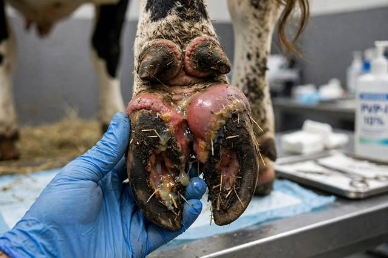

Foot rot is an infectious condition affecting the tissues between the claws and can cause sudden lameness. It is commonly associated with bacterial infection and damaged skin between the claws.
This guide covers clinical signs, causes, diagnosis, treatment principles and prevention.
Clinical Signs
1
Sudden severe lameness(Sudden, severe limping)
2
Swelling around the coronary band(Swelling just above the hoof)
3
Warmth(The foot feels hot)
4
Pain(Pain when the foot is touched or bears weight)
5
Foul smell or discharge between the claws(Bad smell or pus between the claws)
6
Lesions between the digits(Raw sores between the toes)
Sudden severe lameness

Swelling around the coronary bandWarmthPainFoul smell or discharge between the clawsLesions between the digits
Causes and Transmission
Wet, muddy or manure-contaminated conditions soften interdigital skin and increase the risk of injury and infection. Several bacteria may be involved.
Pathogenesis
Foot rot begins when wet, muddy conditions soften the skin between the claws and small injuries let bacteria in. Fusobacterium necrophorum and other bacteria invade the tissues between the claws, causing painful swelling and tissue death.
The infection produces a foul smell and can spread deeper into the joint if not treated. The pain makes the cow lame and reluctant to walk or graze, so milk yield and body condition fall.
Veterinary Diagnosis
Examine and clean the foot carefully to identify interdigital lesions. Differentiate foot rot from sole ulcers, digital dermatitis, joint infection, fractures and other causes of lameness.
Differential Diagnosis
Several conditions can look similar. A veterinarian distinguishes them by the signs, history and laboratory findings:
Sole ulcer and white line disease — cause lameness from lesions in the hoof horn, without foul smell between the claws.
Digital dermatitis — causes a raw, strawberry-like lesion on the heel with less swelling.
Interdigital hyperplasia — is a firm growth between the claws, usually without pain or infection.
Treatment and Case Management
A veterinarian determines whether systemic antimicrobials, pain relief, foot care or other treatment is indicated. Severe or non-responsive cases need reassessment. Observe withdrawal periods and do not apply caustic chemicals to tissue.
When to seek urgent help: Non-weight-bearing lameness, fever, joint swelling or failure to improve needs veterinary reassessment.
Recommended Medicines
1
Antibiotic – Oxytetracycline(For bacterial infection of the foot)10 mg/kg IM daily (conventional) — or LA preparation: 20 mg/kg IM/SC once, repeat after 3–4 days if needed
2
Antibiotic – Ceftiofur(For bacterial infection of the foot)1.1–2.2 mg/kg IM daily
3
NSAID – Meloxicam(For pain and swelling)0.5 mg/kg IV/SC once
4
Topical – Povidone-iodine(Clean and protect the foot lesion)As prescribed by a veterinarian
⚠ Important Tips:
Treat foot rot early — a lame cow that is not weight-bearing needs the vet.
Do not apply caustic chemicals to the foot.
Use antibiotics only under veterinary advice and observe withdrawal periods.
Keep feet dry and trim hooves regularly.
Where several antibiotics are listed, the veterinarian chooses ONE — never use them all together.
Injection — vet-administered onlyMedicines — only as prescribed by a veterinarian
Prevention and Herd Management
Maintain dry standing areas, improve drainage, remove accumulated manure, inspect feet regularly, isolate affected animals when practical and manage trimming with trained personnel.
Frequently Asked Questions
What are the symptoms of foot rot in cattle?
Sudden severe lameness, swelling around the coronary band, warmth, pain and a foul smell or discharge between the claws. Lesions are often present between the digits.
What causes foot rot in cattle?
Wet, muddy or manure-contaminated conditions soften the skin between the claws and increase the risk of injury and infection. Several bacteria may be involved.
How is foot rot in cattle diagnosed?
The veterinarian examines and cleans the foot carefully to identify lesions between the digits. Foot rot must be distinguished from sole ulcers, digital dermatitis, joint infection, fractures and other causes of lameness.
How is foot rot in cattle treated?
A veterinarian determines whether systemic antimicrobials, pain relief, foot care or other treatment is indicated. Severe or non-responsive cases need reassessment. Observe withdrawal periods and never apply caustic chemicals to tissue.
How can foot rot in cattle be prevented?
Maintain dry standing areas, improve drainage, remove accumulated manure, inspect feet regularly, isolate affected animals when practical and manage trimming with trained personnel.
Why is my cow limping?
Sudden severe lameness with swelling around the coronary band and a foul smell between the claws is typical of foot rot. A veterinarian should examine the foot, because lameness can also come from sole ulcers, joint infection or fractures.
How to treat foot rot in cattle?
A veterinarian determines whether systemic antimicrobials, pain relief, foot care or other treatment is indicated. Severe or non-responsive cases need reassessment, so always consult a veterinarian and observe withdrawal periods.
گائے لنگڑا کیوں رہی ہے؟
پاؤں کی سڑن میں اچانک شدید لنگڑاپن، کھروں کے درمیان سوجن، گرمی اور بدبو ہوتی ہے۔ گیلی اور گوبر والی جگہ اس کا سبب بنتی ہے۔ علاج کا فیصلہ ویٹرنری ڈاکٹر کرتا ہے، خود کوئی تیزاب یا کیمیکل نہ لگائیں۔
Key Takeaway
Early recognition, accurate diagnosis, responsible veterinary care and herd-level prevention are central to managing this condition. Follow current local veterinary authority guidance and medicine labels.
Radostits, O.M., Gay, C.C., Hinchcliff, K.W., Constable, P.D. Veterinary Medicine: A Textbook of the Diseases of Cattle, Horses, Sheep, Pigs and Goats.
FAO animal health manuals. Food and Agriculture Organization of the United Nations.
✍️ Written by Dr. Shahid Bilal Depal, DVM (PVMC RVMP #15068)
This guide is for educational purposes. Consult a registered veterinarian for diagnosis and treatment.